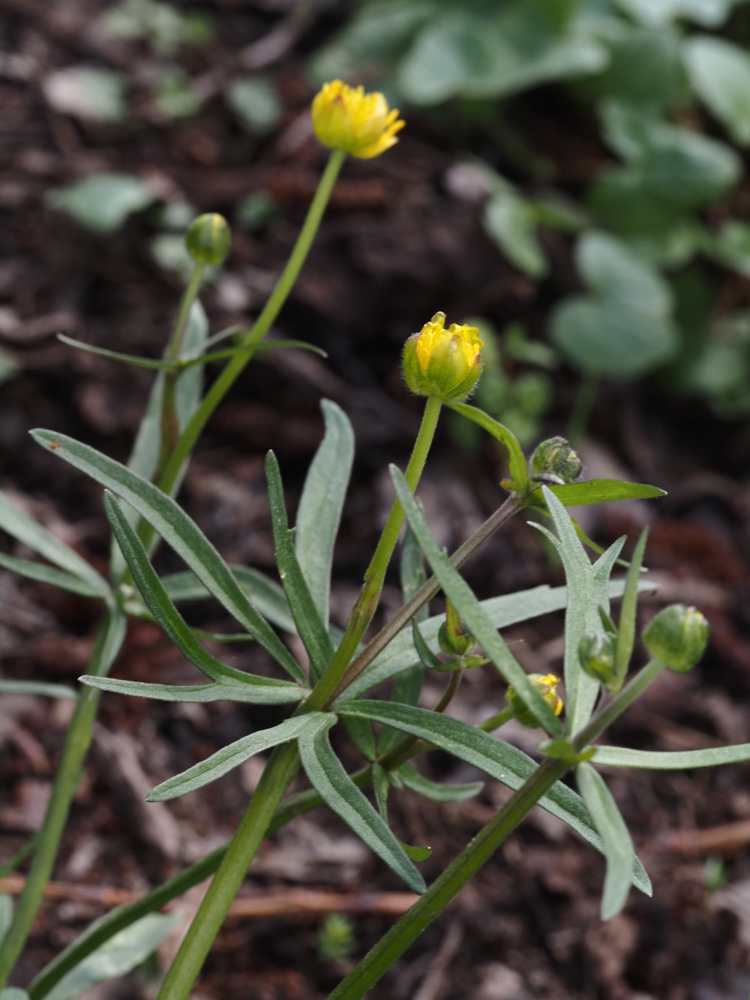

Das Rätsel der unvollständigen Blüten
Der Gold-Hahnenfuß leistet sich etwas botanisch fast Einzigartiges: Viele seiner Blüten sind unvollständig – einzelne Blütenblätter fehlen, manchmal ganz. Das ist kein Zeichen von Krankheit oder Stress, sondern genetisch verankert. Die Art befindet sich möglicherweise in einer evolutionären Übergangsphase und vermehrt sich zunehmend durch Apomixis – Samen ohne Befruchtung. So entstehen genetische Klone mit denselben Eigenheiten.
Altwaldzeiger im Frühjahrsgewand
Der Gold-Hahnenfuß ist kein Allerweltsgewächs. Er bevorzugt alte, strukturreiche Laubwälder mit frischen, basenreichen Böden – Standorte, die durch Abholzung und Bodenverdichtung europaweit seltener werden. Sein Vorkommen lässt sich wie ein ökologisches Zertifikat lesen: Wo der Gold-Hahnenfuß blüht, steht seit langer Zeit Wald – und der Boden erzählt eine lange Geschichte ungestörter Entwicklung.